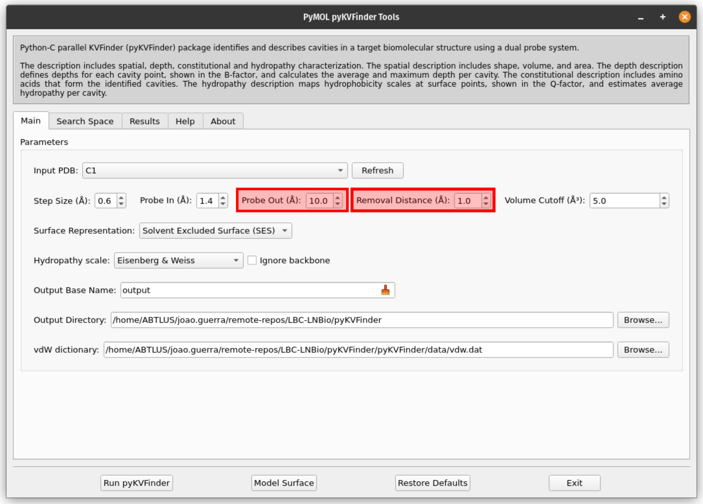

Supramolecular cage cavity detection
In this tutorial, we will use pyKVFinder to identify and characterize the cavity of a supramolecular cage. The files used in this tutorial can be found our GitHub repository:
1. Load the `C1.pdb` file into PyMOL
In PyMOL, open File tab, and click on Open… to load the C1.pdb file.
{kind=link}
Warning
Check all atoms in the structure. Even the ones not visible in the viewer are considered in the cavity detection.
2. Open PyMOL pyKVFinder Tools
In PyMOL, open PyMOL pyKVFinder Tools under Plugin tab. The plugin will open in a new window.
{kind=link}
3. Select the object C1 to be analyzed with pyKVFinder
From the Input PDB drop-down menu, select the object C1. If it does not appear, press the Refresh button.
{kind=link}
4. Set the parameters for the cavity detection
Adjust the detection parameters to suit the supramolecular cage.
The detection parameters (i.e., Step Size, Probe In, Probe Out, Removal Distance, Volume Cutoff, and Surface Representation) will strongly influence the results. These parameters are cage dependent and may need to be adjusted to get an optimal detection for your supramolecular cage. Therefore, the best way to proceed is to iterate between changing the parameters and analyzing (visually) the modelled cavity.
For a detailed explanation of these parameters, refer to the paper J. Chem. Inf. Model. 2023, 63, 3772 and additional guidance here.
Parameter summary
Step Size: Grid spacing used to model the cavity. Decreasing the step size parameter increases the quality of modeled cavity, but it also greatly increases computing time. You do not need to change this value.
Probe In: A smaller probe that defines the molecular surface by rolling around the target structure. Typically, this is set to the size of a water molecule (1.4 Å). Increasing the probe in parameter decreases calculated cavity size however it also increases computing time. You do not need to change this value.
Probe Out: A larger probe that defines inacessibility region (i.e., the cavities), and by rolling around the target structure. Users can adjust the size of the probe based on the characteristics of the target structure. If no cavity is detected, increase this value. Larger Probe Out sizes reduce the degree of accessibility of the molecular surface, leading to longer calculation times.
Removal Distance: A length removed from the boundary between the cavity and bulk (solvent) region. This parameter eliminates cavity points within a specified distance from the cavity-bulk boundary. Reducing the Removal Distance removes fewer points, aiding in the separation of sub-pockets and the detection of superficial cavities. Larger values increase computation time, so keep it between 1 Å and 5 Å to avoid unnecessary, time-consumin*l to exclude small cavities that are not of interest. **You not need to change this value.
Surface Representation: Defines how the surface of the supramolecular cage is represented. Options include vdW (van der Waals surface, unaffected by Probe In), SES (solvent-excluded surface), and SAS (solvent-accessible surface). For realistic modeling, the SES representation, which is the default, is preferred. You not need to change this parameter.
Hydropathy scale: Provides a hydropathy characterization of the detected cavities, mapping hydrophobicity scale values as Q-factors at the surface points of detected cavities. This is based on the hydropathy index of amino acid residues, making it generally inapplicable for supramolecular cages. You do not need to change this value.
For the C1 cage, set Probe Out to 10 Å and Removal Distance to 1 Å for an optimal cavity detection.
{kind=link}
5. Define the Output Directory
The output directory is where the results will be saved. Set the output directory where results will be saved by clicking Browse….
{kind=link}
The cavity file will be saved as <Output Base Name>.KVFinder.output.pdb (PDB format) and the results file as <Output Base Name>.KVFinder.results.toml (TOML format).
6. Run pyKVFinder
In PyMOL pyKVFinder Tools, click on the Run pyKVFinder button to start the cavity detection process.
{kind=link}
Warning
The cavity detection process may take from a few seconds to several minutes, depending on the structure size and the parameters used.
Once complete, the cavities PDB file is loaded into the PyMOL viewer as <Output Base Name>.KVFinder.output object. The results file is displayed in the Results tab.
{kind=link}
7. Visual analysis of the detected cavities
The calculated cavity characterizations can be found in the Results tab.
We can select cavities in the Volume or Surface Area lists to highlight them on a new object called cavities, identifying each cavity.
{kind=link}
Note
The surface points are colored in red (nb_spheres) and the remaining cavity points are colored in blue (non_bounded).
We can select cavities in the Average Depth or Maximum Depth lists to highlight them on a new object called depths, identifying each cavity.
{kind=link}
Note
The cavity points are colored using a gradient from blue to red to represent the depth of each point. The blue points correspond to the shallowest points on the cavity-bulk boundary, while the red points correspond to the deepest points. The depth scale ranges from 0.0 to the maximum depth of all cavities
These characterizations can also serve as a quality control for cavity detection. For instance, if the cavity is poorly detected, the depth points will not be well-distributed, and the surface points will not be well-defined. In such cases, you can adjust the parameters and run pyKVFinder again to improve the results.
Video tutorial
A video tutorial is available to guide you step-by-step through the process of using pyKVFinder software to characterize cavities in supramolecular cages.